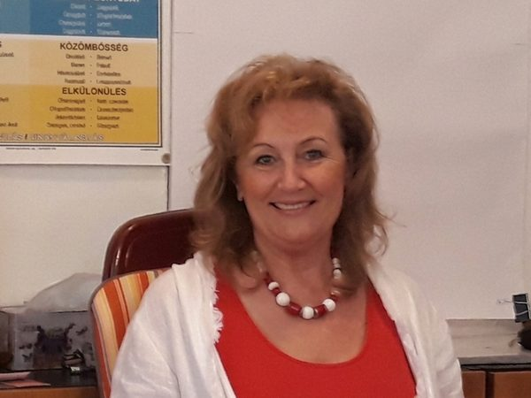

Szakmai mentorálás
One Brain kineziológia útján
Tizenöt éven keresztül vezettem a Faro Stúdiót, és oktattam a One Brain (Three in One Concepts) módszert. Bár a fizikai stúdió kapuit bezártam, és az aktív, csoportos oktatást lezártam, az a sűrű, évtizedek alatt felhalmozott tudás, gyakorlati tapasztalat és emberismeret, amit a One Brain rendszerén keresztül felépítettem, nem veszett el. Ma ezt a szellemi tőkét és módszertani tisztaságot személyre szabott szakmai mentorálásként adom tovább mindazoknak, akik segítő hivatást gyakorolnak, vagy elakadtak a praxisukban.

Mikor lehet hasznos?
Segítség a tanfolyamon kívül is
15 éves oktatói pályám során gyakran merült fel igény arra, hogy tanfolyamon kívül is kérhessenek segítséget a hallgatók, akár nálam tanultak, akár másnál. Erre a szakmai mentorálás keretében van lehetőség. Nézzük, milyen esetekben lehet hasznos:
- Még benne vagy a képzésben, de valahol, valamilyen elakadásod van, de nem szeretnél, vagy nem tudsz ismételni. Ez az elakadás lehet egy-egy korrekció megértése és precíz kivitelezése, az oldás folyamatának lényegi megértése, oldólap értelmezése.
- Már túl vagy a képzési úton, de még akadnak „fehér foltok”.
- Bárhol is tanultál, úgy érzed, a teljes megértéshez szükséged lenne egy másik nézőpontra is.
- Elkezdtél kliensekkel dolgozni, és megjelennek „váratlan” helyzetek, amelyek kezelése konzultációt igényelne.
- Gondod van az ügyfeltárással, az oldás alatti kommunikációval.
- Kihagytál éveket (gyerekszülés vagy más élethelyzet miatt), és újra „lendületet” szeretnél kapni.
- Pár évnél régebben végeztél, és szeretnél pontos információkat kapni a változásokról.
- Szakvizsgát szeretnél tenni.
- Bármilyen más esetben, amikor szükséged lehet rá…
Online ismétlés
One Brain oktató videók
Ez egy 3 hónapos (90 napos) online ismétlési lehetőség, amelynek során minden segítséget megkapsz a kineziológia One Brain® anyagának sikeres elsajátításához. Kapsz kisvideókat, amelyekben minden modult külön bemutatok, mintha a tanfolyamon ülnél. Minden korrekcióról külön bemutató videó készült magyarázattal. A videókhoz 3 hónapig (90 napig) lesz hozzáférésed, a saját tempódban dolgozhatod fel őket.
Az online ismétlés mellé kérhetsz személyes szakmai mentorálást is, ha úgy érzed, további támogatásra van szükséged!
Csak azokhoz a modulokhoz kapsz hozzáférést, amelyeket már elvégeztél, és ezt az „útleveled” bejegyzésével vagy az okleveled bemásolásával igazolhatod.
Tovább a megrendeléshezSzeretnél elindulni?
Ha úgy érzed, jól esne egy tapasztalt One Brain oktató, mentor kísérete a szakmai fejlődésedben vagy a praxisod építésében, szeretettel várlak egy kötetlen beszélgetésre.
Időpontot foglalok